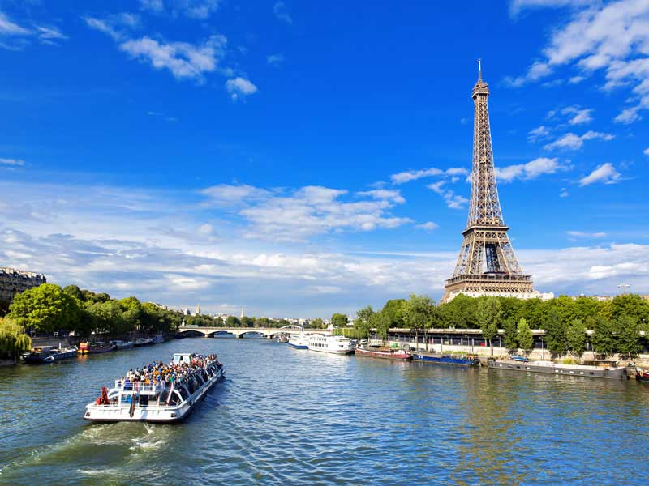
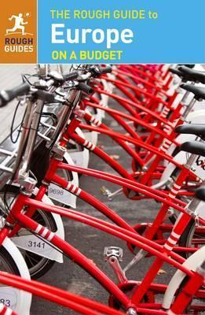
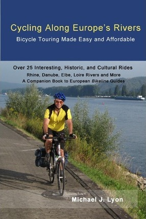
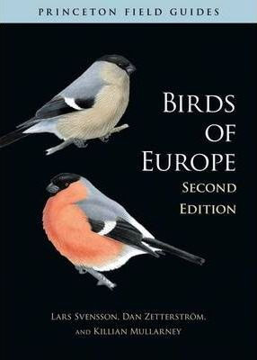
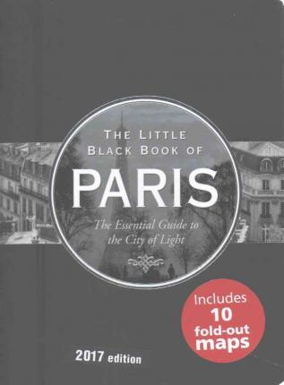

Travel to live, Live to Travel
Travel to live, Live to Travel

Europe is a continent located entirely in the Northern Hemisphere and mostly in the Eastern Hemisphere. It is bordered by the Arctic Ocean to the north, the Atlantic Ocean to the
west and the Mediterranean Sea to the south.
It comprises the westernmost part of Eurasia
.
Accomendation-In most Western European countries, expect to pay 25–35 euros per night for a dorm room. (Though in Greece and Spain, it’s only 10–20 euros per night.) In Scandinavia, expect to pay around 30–35 Euros per night. In England, prices are usually around 20–30 pounds per night.
Transportation- Cheap fast food meals cost 9–15 euros, while restaurants meals cost around 15–25 euros. Nicer establishments will cost 30 euros or more. You can cook your food for a week for around 65 euros>.
Food-Trains connect every major part of Europe, and they’re often very cheap. High-speed trains, though, can cost over 100 euros. Try to get the regional or slow trains for cheaper prices! The rise of cheap airlines like Ryanair, EasyJet, and Transavia has made flying around Europe in a hurry really cheap. For flights, expect to pay around 50 euros if you book in advance. Transportation around most cities is only 1–2 euros.
|  | The Rough Guide to Europe on a BudgetTravel Europe on the cheap with this updated guide, the ideal companion whether you're on a city break, beach vacation, or road trip. |  | Cycling Along Europe's Rivers Over 25 Interesting, Historic, and Cultural Rides. Second Edition 2016, including expanded section on Northern Italy. Cycling Along Europe's Rivers is a "How To" book on taking self-guided bike trips to Europe that are affordable and easy to organize. The book is based on the author's extensive experience, including over 20 years of annual cycle trips to Europe. |
|  | Birds of Europe : Second Edition Since it was first published a decade ago, Birds of Europe has become the definitive field guide to the diverse birdlife found in Europe. Now this superb guide has been brought fully up to date with revised text and maps along with added illustrations. Uniquely designed for easy use in the field, this expanded edition covers all 772 species found in the region as well as 32 introduced species or variants and 118 very rare visitors. |  | Little Black Book of Paris, 2017 Edition : The Essential Guide to the City of Lights 2017 Edition. Let this sleek little guidebook help you locate City of Light landmarks, arts and entertainment venues, restaurants, cafes, hotels, chic shops, and after-dark stops!Color-coded, numbered entries in the text are keyed to full-color neighborhood maps in each chapter. |